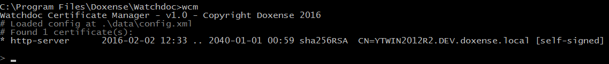
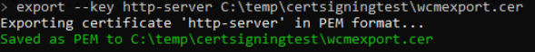
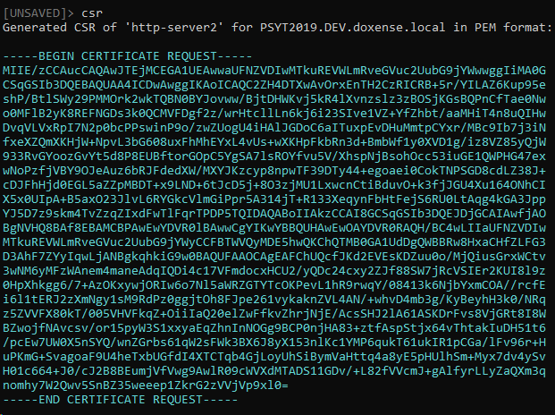
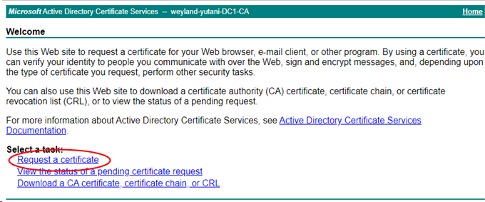
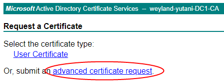
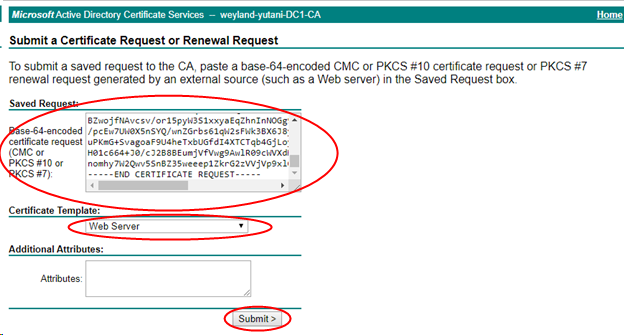
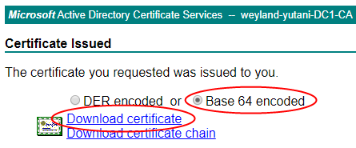

Accéder à WCM
-
Lancez la console Windows en tant qu'administrateur ;
-
lancez la commande cd et indiquez le chemin d'accès à WCM (C:\Program Files\Doxense\Watchdoc par défaut) ;
cd C:\Program Files\Doxense\Watchdoc
-
lancez l'outil wcm.exe

Exporter le certificat existant
-
Dans WCM, saisissez le chemin vers le fichier de configuration :
-
pour Watchdoc :
/config=..\Watchdoc\Data\config.xml -
pour Watchdoc Supervision Console (WSC) :
/config=..\Supervision\Data\wts_config.xml
-
saisissez la commande pour exporter le certificat incluant la clé privée :
-
pour exporter vers C:\Program Files\Doxense\Watchdoc\http-server.cer :
export --key -
pour choisir un autre espace d'export spécifique :
export --key http-server C:\temp\certsigningtest\wcmexport.cer
Générer un fichier CSR
Saisissez la commande csr pour générer le fichier CSR Client Side Rendering. Dans une infrastructure Client/serveur, le Client-side rendering est la prise en charge du spool par le poste client et non par le serveur. Le poste client envoie donc au serveur un fichier de spool finalisé. (Certificat Signing Request) correspondant au certificat sélectionné en base64 :
Client Side Rendering. Dans une infrastructure Client/serveur, le Client-side rendering est la prise en charge du spool par le poste client et non par le serveur. Le poste client envoie donc au serveur un fichier de spool finalisé. (Certificat Signing Request) correspondant au certificat sélectionné en base64 :

Produire le certificat signé
-
Dans un navigateur web, saisissez l'adresse permettant d'accéder au contrôleur de domaine (exemple : http://adresseDC/certsrv) ;
-
dans la section Select a task, cliquez sur Request a certificate :

-
dans l'interface Request a Certificate, cliquez sur Advanced certificate request :

-
dans l'interface Submit a Certificate Request or Renewal Request, collez le CSR en base 64 dans la zone de saisie Saved Request :
-
dans la section Certificate Template, dans la liste déroulante, sélectionnez Web Server ;
-
cliquez sur Submit :

-
dans l'interface Certificate Issued, cochez le bouton-radio Base64 encoded ;
-
Cliquez ensuite sur Download certificate :

-
Sauvegardez le certificat signé (extension .cer).
Compléter la demande de certificat
Pour compléter le certificat :
-
arrêtez le service (Watchdoc ou WSC en fonction de l'outil sur lequel vous installez le certificat) ;
-
activez WCM :
-
dans WCM, saisissez la commande suivante :
complete http-server <chemin vers votre certificat> -
Confirmez avec la commande y
-
Sauvegardez avec la commande save
-
Redémarrez le service (Watchdoc ou WSC).